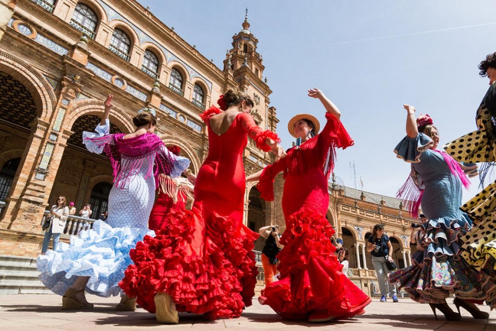
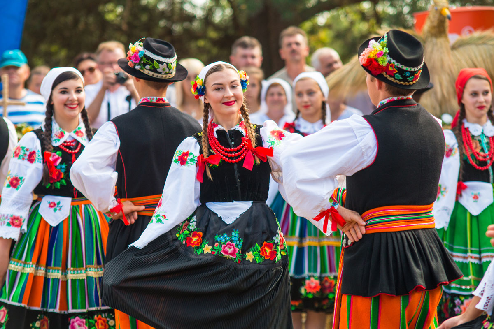
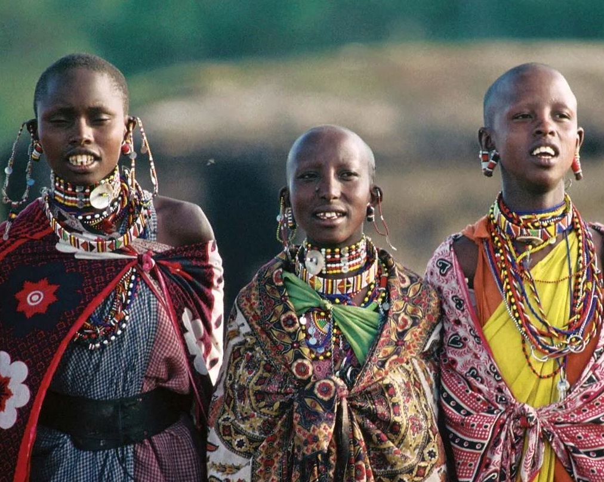

Tradițiile și obiceiurile sunt practici și ritualuri transmise din generație în generație, care reflectă valorile,
credințele și identitatea unei comunități. Ele sunt parte integrantă a culturii și contribuie la coeziunea socială,
oferind un sentiment de apartenență și continuitate. Tradițiile și obiceiurile pot varia semnificativ de la o cultură
la alta și sunt influențate de factori istorici, geografici, religioși și sociali.
Aceste practici culturale pot include o gamă largă de activități, cum ar fi sărbători religioase și laice, ritualuri de
trecere (precum nașterea, căsătoria și moartea), festivaluri sezoniere și alte evenimente comunitare. Ele pot implica elemente
precum dansuri, cântece, mâncăruri tradiționale, îmbrăcăminte specifică și diverse forme de artă populară.
Tradițiile și obiceiurile joacă un rol esențial în educarea noilor generații despre istoria și valorile comunității lor. Ele servesc
ca un mijloc de transmitere a cunoștințelor și abilităților, întărind legăturile dintre trecut, prezent și viitor. În plus, ele
oferă un cadru pentru celebrarea identității și diversității culturale, promovând respectul și înțelegerea reciprocă între diferite grupuri.
De asemenea, tradițiile și obiceiurile pot contribui la dezvoltarea unei identități naționale sau regionale, consolidând sentimentul de
mândrie și solidaritate în rândul membrilor unei comunități. Ele pot reflecta particularitățile unei regiuni, cum ar fi clima, peisajul
natural și resursele disponibile, adaptându-se de-a lungul timpului la schimbările sociale și economice.


În era globalizării, tradițiile și obiceiurile sunt supuse unor influențe externe și pot evolua sau chiar dispărea. Totuși, multe comunități
fac eforturi deliberate pentru a-și păstra și revitaliza patrimoniul cultural, recunoscând importanța acestuia pentru identitatea lor. Festivalurile
și evenimentele culturale, educația și inițiativele de conservare joacă un rol crucial în acest sens.
Tradițiile și obiceiurile pot avea și o funcție de reglare socială, stabilind norme și comportamente acceptabile în cadrul comunității. Ele pot
oferi ghiduri pentru comportamentul moral și etic, întărind valorile comune și coerența socială. Prin urmare, ele contribuie la stabilitatea și
funcționarea armonioasă a societății.

Din punct de vedere psihologic, tradițiile și obiceiurile pot oferi confort și siguranță, creând repere familiare și structuri în viețile oamenilor.
Ele pot ajuta la marcarea timpului și a schimbărilor ciclice, cum ar fi anotimpurile sau etapele vieții, oferind un sentiment de
ritm și predictibilitate.
Așadar, tradițiile și obiceiurile sunt esențiale pentru păstrarea identității culturale și coeziunii sociale. Ele oferă un cadru pentru exprimarea valorilor,
credințelor și practicilor unei comunități, contribuind la educația, stabilitatea și continuitatea acesteia. În fața schimbărilor globale, păstrarea
și adaptarea acestor tradiții rămân o preocupare importantă pentru multe comunități din întreaga lume.